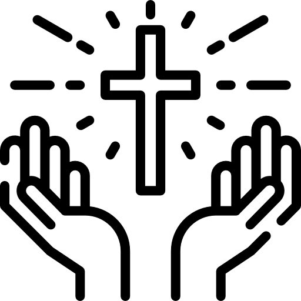

Geloven

Katholiek
55%
Protestant
30%
Atheist
10%
Overig
5%
Een land vol cultuur

55%
30%
10%
5%
Brazilië heeft veel verschillende religies door kolonisatie, slavernij en inheemse culturen.
De grootste religie in Brazilië. Gekomen met de Portugezen. Veel kerken en feesten, vooral in Bahia.
Groeit snel in staten zoals São Paulo. Diensten zijn levendig met zang en gebed.
Afro-Braziliaanse religies met dans, muziek en rituelen. Vooral zichtbaar in Salvador (Bahia).
Geloof in natuurgeesten en voorouders. Veel in het Amazonegebied.
Geloven in reïncarnatie en contact met geesten. Populair in grote steden.